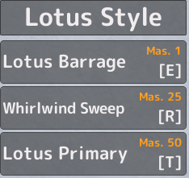

🥋 LOTUS STYLE
Description
A taijutsu fighting style focused on powerful kicks, aerial combos and overwhelming physical attacks.
ATTACKS
Basic Attack (M1)
Normal: 41.1
Lotus Barrage
Performs a rapid barrage of punches, dealing 95 damage.
Effect: Stuns
Whirlwind Sweep
Performs a powerful horizontal kick, dealing 131.6 damage.
Effect: Knockback
Lotus Primary
Launches the opponent into the air before slamming them into the ground, dealing 308.3 damage.
Effect: Knockback
How to Obtain
This fighting style can be learned from the NPC shown in the image above.
Requirements
Required Level: 75+
Cost: 100,000 Money
